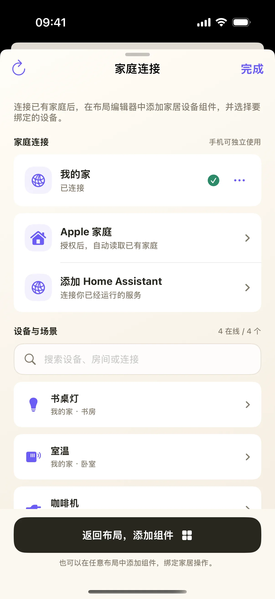
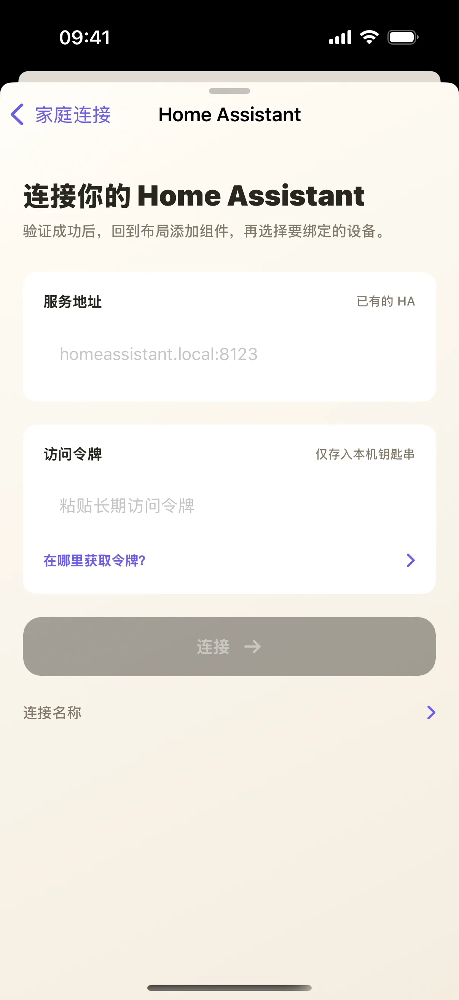
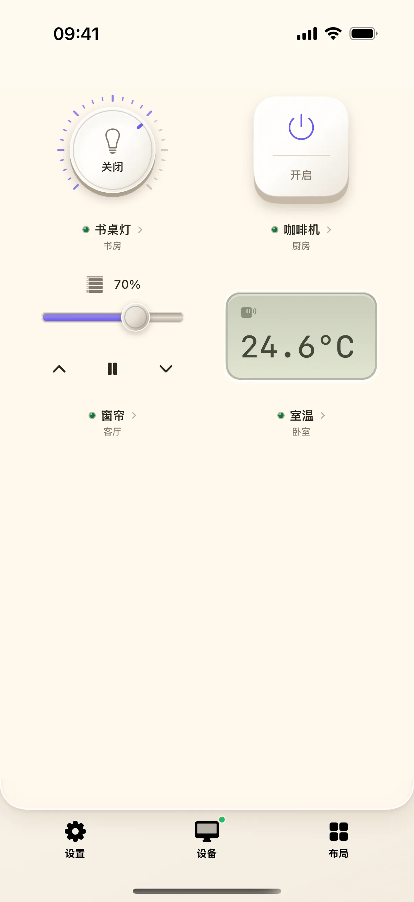
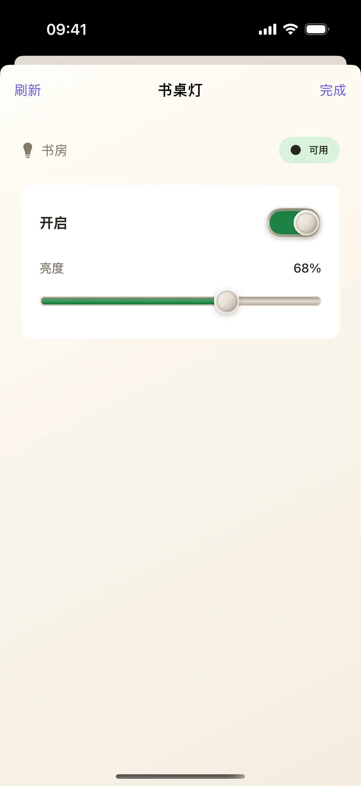

先让奶猫妙控连接已有家庭，再把一盏灯放上桌面。下面用 Home Assistant 讲连接流程，并用“书桌灯”演示开关与详情；确认一台设备后，再添加其他设备。
开始前准备
- iPhone / iPad 安装奶猫妙控 1.2.0，本功能可独立使用，不要求连接 Mac。
- 准备已经运行的 Home Assistant，以及能在该平台正常控制的一盏灯。手机需要能访问其地址；先在 Home Assistant 自身验证开关正常。
1. 在空家居布局中点“连接家庭”
在 App 底部点“布局”，在列表中找到“智能家居”。布局较多时用搜索框搜索名称；有多个桌面的方案先点右侧箭头展开，再点桌面名称；搜索具体桌面名称也能找到它。首次没有连接时会显示“连接家庭”。点它进入“家庭连接”，再选择添加 Home Assistant 的入口。
如果已经有设备，不需要重建家庭。先检查现有连接和设备详情，再决定是否添加另一条连接。本文演示截图是连接完成后的设备桌面。

2. 填写服务地址与长期访问令牌
在连接表单的“服务地址”中填写你的 Home Assistant 地址。例如本地实例可能使用 homeassistant.local:8123，但必须替换成手机实际能访问的地址。
在 Home Assistant 个人资料的“安全”页创建长期访问令牌，复制到 App 的“访问令牌”字段。不要把登录密码填成令牌。如果使用本地 HTTP，按页面提示确认“允许此本地 HTTP 连接”；令牌只用于你自己的连接，不要放进教程截图。

参考：Home Assistant 官方个人资料与安全设置说明。
3. 连接成功后，把设备加到桌面
点“连接”，等待明确的已连接状态和设备列表。点“返回布局，添加组件”，再从空布局的“添加设备组件”进入编辑器，选择家居设备组件并绑定刚才那盏灯。
也可使用空桌面上的“自动添加…台在线设备”入口批量加入。连接成功与组件已添加是两步；只填完令牌，并不会让每个设备自动出现在已有桌面上。
4. 确认设备名与房间，再按开关
回到桌面，先核对卡片上的设备名与房间，例如“书桌灯／书房”。点灯光旋钮中心切换电源，等待状态返回，再观察真实灯是否熄灭；再次点中心恢复开启。
本次演示服务实际返回了“关闭”，界面也随之变化。但真实家庭中，仍要看设备或 Home Assistant 的状态，按钮按下的瞬时反馈本身不足以确认执行成功。

5. 需要调亮度时，拖动外圈
灯光旋钮中心负责开关，外圈负责亮度。沿外圈顺时针小幅转动增大、逆时针减小，松手后等待状态回读。先做小幅调整，确认真实灯亮度与手机数值一致，再继续。
开关与调光需要设备分别提供相应能力。只支持通断的插座不能通过旋钮获得调光功能，温度传感器也只显示它实际提供的数值。
6. 点设备名称，检查详情与连接状态
点卡片下方的设备名称区域，打开详情，查看设备提供的状态与更多控制。出现离线或错误时先在这里确认，再回到 Home Assistant 检查设备本身。
当一盏灯的开关和回读都验证通过，再添加窗帘、插座等设备，并逐台检查它们的真实动作。Matter 设备先加入 Apple 家庭或 Home Assistant，本 App 不提供独立的 Matter 配网流程。

操作不符合预期时
连接成功，桌面却没有设备？
先看家庭连接是否发现支持的设备，再返回布局添加并绑定家居设备组件。已有连接不会自动重排你之前编辑好的桌面。
状态显示离线时，为什么按钮灰了？
离线设备不能保证接收控制请求。先检查家庭平台中的在线状态和手机到服务地址的连接；恢复后等待新状态回读。
可以改用 Apple 家庭吗？
可以连接已有 Apple 家庭，并按系统提示允许访问。设备需要先在家庭平台加入并可用；相机、门锁等能力不在本文灯光练习的支持范围内。
本文按奶猫妙控 1.2.0 的界面与操作编写，更新于 2026 年 9 月 10 日。查看更新日志 · 连接与权限帮助。